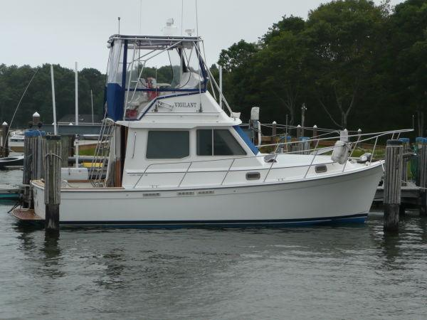

Cape Dory 30 PowerYacht Flybridge
1989–1991
The Cape Dory 30 Flybridge is a compact hard-chine modified-V Downeast cruiser introduced near the end of Cape Dory’s Massachusetts production. Unlike the semi-displacement 28, the 30 was designed for substantially higher cruising speeds while retaining a full-length keel, protected running gear, a traditional teak interior, flybridge and optional lower helm. Twin inboard installations are typical, and surviving boats may have significant repower histories.

- Length
- 30.25 ft
- Beam
- 12 ft
- Draft
- 3 ft
- Hull behaviour
- Planing / Modified-V
- Fuel
- Diesel
- Propulsion
- Shaft
- Engine configuration
- Twin Inboard
- Boat family
- Trawler
- Construction
- Fiberglass; balsa-cored hull sides reported
Best for
- Couples wanting classic Cape Dory styling with faster cruise capability
- Coastal and Great Lakes cruising where twin-engine performance is useful
- Owners comfortable maintaining twin diesels and flybridge systems
Trade-offs
- Twin engines increase service cost and systems complexity
- 12-foot beam and flybridge height reduce transport and marina flexibility
- Balsa-cored hull-side structures require careful moisture inspection around penetrations
- Short original production run means fewer comparable boats and model-specific parts sources
Known concerns
- No model-specific concern has been promoted to B-Atlas’s evidence threshold. This does not mean the model has no age-, condition- or hull-specific risks.
Inspection focus
- Confirm original versus repowered engine configuration and document engine-bed or shaft-line changes
- Moisture-test balsa-cored hull sides, side decks and cabin/deck penetrations
- Inspect windows, lower-helm area and cockpit/deck structures for leakage history
- Inspect twin-engine cooling, exhaust, mounts, shafts, cutlass bearings, rudders and steering
- Inspect fuel, water and holding tanks, fill/vent hoses and access
- Verify flybridge structure, ladder, steering controls and actual bridge clearance
Continue researching
Related boat models
27.92 ft · Semi-Displacement
32.83 ft · Planing / Modified-V
35.75 ft · Planing / Modified-V
27.92 ft · Semi-Displacement
27.92 ft · Semi-Displacement
40 ft · Planing / Modified-V
About this record
B-Atlas preserves uncertainty: missing information remains unknown rather than being treated as a negative. Specifications and guidance describe the model record; individual boats can differ by year, equipment, refit and condition.